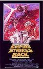
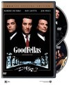
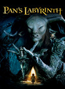
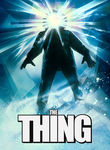
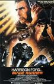
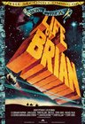

IMDb Top 250
Stephen Klancher
...has seen 198
...has seen 524.4 hours
...has not seen 79.2 hours

Timeline - Covers
Most Recent:
Avengers: Infinity War
First Unseen:
Parasite (# 34)
...has seen 198
...has seen 524.4 hours
...has not seen 79.2 hours
Timeline - Covers
Most Recent:
Avengers: Infinity War
First Unseen:
Parasite (# 34)
1.

The Shawshank Redemption (1994)
Stephen Klancher: SEEN 
I'm not sure it forever deserves the top spot on IMDB, but definitely a good movie. I remember watching it on TV some night in Jr High when I was supposed to be working some project... let's see, do a diorama of a scene from 1984 or watch Shawshank? Hmm...
2.

The Godfather (1972) Releases on 1972-03-24
Stephen Klancher: SEEN
I don't remember much about this movie directly. The main thing I remember is a comment from a friend while we all watched it together the summer before college. My girlfriend at the time was either disinterested or bothered by the violence, whereas I thought it was a cool movie. By my friend's observation, this was the first time in a long time that I insisted on an opinion contrary to hers. I don't remember being that bad, but the observation was memorable, and this movie reminds me of it.
3.

The Dark Knight (2008)
Stephen Klancher: July 19, 2008
Saw on the IMAX twice on the first Saturday after release. OMG so good! Got a picture of me with the Joker at the theater too.
4.

The Godfather: Part II (1974)
Stephen Klancher: January 2, 2004
I can't say I remember a lot about this movie other than the fact that I watched with Bob not long after college started. And that he heard the third movie was bad so he refused to watch it... so this is where we stopped.
5.

12 Angry Men (1957)
Stephen Klancher: October 19, 2007
I actually saw the 1997 version first (Tony Danza!), but I love them both. Such a great thing to have a story focused down to pretty much one room and just watching the characters interact. I liked this (both versions actually) a lot.
6.

Schindler's List (1993)
Stephen Klancher: SEEN
I watched this in my 9th grade history class. Liam Neeson back when his only power was being German. No force, no lightsaber. But seriously, this is a serious movie. I don't remember much of the specifics at this point, but watching Life is Beautiful more recently made me think of watching this.
7.
The Lord of the Rings: The Return of the King (2003) Releases on 2003-12-17
Stephen Klancher: December 17, 2003
Probably my favorite of the trilogy, but they are all fantastic.
8.

Pulp Fiction (1994) Releases on 1994-10-14
Stephen Klancher: SEEN
Very fun. Reading Quentin Tarantino and Philosophy (http://www.amazon.com/Quentin-Tarantino-Philosophy-Popular-Culture/dp/0812696344) made it even more so.
9.

The Lord of the Rings: The Fellowship of the Ring (2001) Releases on 2001-12-19
Stephen Klancher: SEEN
I read half-way through the books, quit for a while, then finished right before this came out. I actually like the movies better. I enjoy all three movies, but one notable thing about this one was much fun it was that everyone around me was really into it at the time. The fact that the girls I was friends with and girlfriend at the time were drooling over the actors just added another reason for everyone to be enthusiastic and want to keep rewatching it. So yeah, fun times. :-)
10.

The Good, the Bad and the Ugly (1966)
Stephen Klancher: SEEN
I knew I had enjoyed Unforgiven and Shane, but this was the movie which convinced me: I really enjoy westerns! I watched this with a girl I met on a bus. She forgot her purse and I argued with the bus driver and made him wait until she came running up from the previous bus stop. Obviously the only thing to do was invite her over for dinner and a western right?

12.

Fight Club (1999)
Stephen Klancher: SEEN
There's so much that is cool about this movie. But mostly the impact of the reveal the first time you watch it. The sort of Sixth-Sense change where you can then rewatch it as an entirely different experience.
13.

The Lord of the Rings: The Two Towers (2002) Releases on 2002-12-18
14.

Inception (2010) Releases on 2010-07-16
Stephen Klancher: July 17, 2010
Dreams within dreams... there was never a chance I wouldn't like this movie. It was incredibly fun.
15.

Star Wars: Episode V - The Empire Strikes Back (1980)
Stephen Klancher: SEEN
This was the one I watched least when I was younger. The slightly less familiarity has made it more attractive for rewatching in later years. Also it's Star Wars. <3
16.

The Matrix (1999)
Stephen Klancher: SEEN
My parents (divorced) got in an argument over this movie. My dad wanted to take me to see it, but my mom, more strict at the time, didn't want it to happen. At some point she finally gave in, but then we had to go see it in the cheaper, crappier theater. It was still amazing, of course. And as Bob can attest, at any given time my dad's house on Mountain Oak probably had the DVD of this or Fifth Element playing. It's too bad they never made any sequels to this. <i>None. Never.</i>
17.

Goodfellas (1990)
Stephen Klancher: SEEN
I remember choosing to <i>not</i> watch this with Brett, then watching it maybe a year later and thinking I was stupid for missing out on it. Cool movie!
19.

Se7en (1995)
Stephen Klancher: SEEN
This movie did not strike me as much as most people I guess. Am I too desensitized? I just seem to remember Brad Pitt swearing a lot.
20.

Seven Samurai (1954)
Stephen Klancher: SEEN
Watched this with Julie at some point. I mostly just remember liking the wild guy, full of bravado and fun to watch.
21.

It's a Wonderful Life (1946)
Stephen Klancher: SEEN
This was our Christmas movie growing up with my dad and it has ingrained a like of Jimmy Stewart in my brain.
22.
The Silence of the Lambs (1991) Releases on 1991-02-14

24.

City of God (2002) Releases on 2004-02-13
Stephen Klancher: SEEN
I got a hold of this movie because of Erin near the beginning of college, although I can't remember for certain if I watched it with her or not. The main impression I remember about this movie is that it was vivid both in color and content.

26.

Life Is Beautiful (1997) Releases on 1998-10-23
27.

The Green Mile (1999)
28.

Star Wars: Episode IV - A New Hope (1977)
Stephen Klancher: SEEN
I am very much a Star Wars fan. I've read about 40 books, played a handful of games, and seen most of what there is to see. There were some summers growing up where I was mostly watching the Star Wars trilogy and playing Mario 3.
2011-02-26 - Watched Star Wars Begins, the excellent fan-made documentary.
2011-02-26 - Watched Star Wars Begins, the excellent fan-made documentary.

30.

Back to the Future (1985)
Stephen Klancher: SEEN
I love the Back to the Future trilogy. Yes even the third one. I've always especially loved the music. Watching Predator at some point I was wondering why it was reminding me of Back to the Future... and it turns out the same guy did the music...
31.

Spirited Away (2001) Releases on 2001-07-20
Stephen Klancher: April 6, 2003
I watched with in a theater in Bakersfield with my mom. I don't know if it was a rerelease or late after the release or if this is all they did in Bakersfield, but I seem to remember that it was only playing on this one screen in town and it was an abnormally small one.
I really enjoyed the animation and the fantasy of the whole setting.
I really enjoyed the animation and the fantasy of the whole setting.

33.

Psycho (1960)
Stephen Klancher: February 9, 2008
It was weird to me to see the shower scene, a cultural reference used so extensively, fleshed out and finally see the whole story associated with it.


36.

The Lion King (1994)
Stephen Klancher: SEEN
Back in the good old days of Disney movies... Scar was a great villain and the song Be Prepared is incredible.
37.

Gladiator (2000)
Stephen Klancher: SEEN
Fun movie... I always picture the "walking through the fields" sequence... Also, Battle!
38.

American History X (1998)
Stephen Klancher: SEEN
This movie was incredibly violent. I saw it when I was 14 and while I'd like to be able to say that a 14 year old should be able to see anything, I also like to remind my mom that by letting me see the curb scene at that age I was forever traumatized.
39.
The Departed (2006)
Stephen Klancher: SEEN
I think this is one of the finest remakes ever. I saw the original Infernal Affairs several years prior and loved it. But this version was excellent in its own right.
40.

The Usual Suspects (1995) Releases on 1969-12-31
Stephen Klancher: SEEN
I remember thinking this was a really cool movie back when I watched it at Nick's house in high school. To be honest I can't remember much about it now, just the feeling that it was really cool... and seeing Spacey suddenly stop limping...
41.

The Prestige (2006)
Stephen Klancher: SEEN
I liked this a lot. Although I seem to remember that something about it lead to an argument. Whatever, very fun.

43.

Casablanca (1942)
Stephen Klancher: August 4, 2003
I borrowed and watched this summer of 2002. Even then I had a vague idea that I wanted to see some of the most well known movies, with the IMDB top 250 as my idea for a good start.
I really enjoyed it! And so many elements or lines in it that could be called cliche now were actually their origin. This is the movie that solidified my interest in watching well rated "old movies." Compare to Citizen Kane.
I really enjoyed it! And so many elements or lines in it that could be called cliche now were actually their origin. This is the movie that solidified my interest in watching well rated "old movies." Compare to Citizen Kane.
45.

Grave of the Fireflies (1988)
Stephen Klancher: September 20, 2009
Sad but overrated. Seeing near the end that he still had money in the bank was kind of weird. Seems like he should have done that earlier. But I guess this really was from a true story and the guy was guilty about his sister. I prefer more fanciful anime than this real life oriented stuff.


48.

Once Upon a Time in the West (1968) Releases on 1968-12-21
Stephen Klancher: February 8, 2008
I'm a sucker for musical themes, so harmonica = win. Another movie as evidence that I love westerns.
49.

Rear Window (1954)
Stephen Klancher: October 20, 2007
I like Stewart, but I did not care much for this movie. Especially in comparison to other Hitchcock films I've seen: An ever increasing number as I go through the IMDB Top 250.
50.
Cinema Paradiso (1988) Releases on 1969-12-31
Stephen Klancher: SEEN
I watched this with my mom in Bakersfield at some point. I remember hearing the title and not thinking I was interested, until either I looked it up or she told me it was on the IMDb list... now it was part of the mission! The movie itself was okay...
51.

Alien (1979)
Stephen Klancher: January 15, 2008
I thought I had seen it before. Finally saw for sure now that I'm going through all the Alien and Predator movies with Nick.
Very cool movie.
Very cool movie.
52.

City Lights (1931)
Stephen Klancher: October 20, 2008
A few lol moments. I'm not very into silent films. I think the main role they should play in modern times is a lesson for filmmakers: You can communicate without saying something directly in dialog.

54.

Memento (2000) Releases on 2000-10-11
Stephen Klancher: SEEN
Showing events out of chronological order can range from confusing to really cool. Memento used it in a gimmicky way, but it turned out great.

56.

Raiders of the Lost Ark (1981)
Stephen Klancher: SEEN
I love Indiana Jones and Harrison Ford. I watched a lot of Star Wars and Indiana Jones while growing up. Just thinking about it makes me want to watch again...
57.

WALLE (2008)
Stephen Klancher: July 27, 2008
I saw this with Tim and his wife at the tail end of its theater run. Cute movie and the first half or so is another good example of how much can be communicated with no verbal dialog.

59.

Sunset Blvd. (1950)
Stephen Klancher: June 27, 2008
By the time she gets that crazy, the well known line is haunting: "All right, Mr. DeMille, I'm ready for my close-up." This is one of many movies about movies/actors/Hollywood that the IMDB list has led me to.

61.
The Shining (1980)
Stephen Klancher: August 21, 2008
There are some seriously creepy moments in this movie. Even though I knew the gist of it and had seen parts on TV, when I finally sat down and watched it straight through, it freaked me out.

64.
Witness for the Prosecution (1957) Releases on 1969-12-31
Stephen Klancher: May 31, 2009
The credits actually had a plea not to spoil the ending for friends who had not seen it... So I can only say it was cool. Charles Laughton was awesome as the aging defense attorney. His first line: "If I'd have known how much you'd talk, I wouldn't have come out of my coma."
65.

Aliens (1986)
Stephen Klancher: January 17, 2008
Game over man! A totally different kind of cool than the first one. Plus like half of the sounds from StarCraft are from this movie.
67.
American Beauty (1999)
Stephen Klancher: December 31, 2002
Fantastic movie. Many good quotables. I tend to rather watch something new instead of rewatching anything, but if I see this on I'm completely unable to pull myself away.
68.

Dr. Strangelove or: How I Learned to Stop Worrying and Love the Bomb (1964)
Stephen Klancher: SEEN
Peter Sellers is amazing. Just remember, "you can't fight in here! This is the War Room!"

70.

Oldboy (2003) Releases on 1969-12-31
Stephen Klancher: SEEN
This was a pretty mindfuck movie when I first saw it. I'd still like to watch the sequel/prequel at some point.
71.

Inglourious Basterds (2009)
Stephen Klancher: August 23, 2009
Brad Pitt was fun but Col. Landa (Christoph Waltz) was great. Some of the violence was pretty gruesome even considering it was Terantino. It made me remember having read someone comparing the Nazis watching Nation's Pride cheering the violence against the Allied soldiers to the audience cheering the violence on screen against the Nazis. Anyway, the inferno was pretty impressive and the face projected on the smoke was creepy cool.
72.
Amadeus (1984) Releases on 1969-12-31
Stephen Klancher: March 9, 2004
I think watched this for extra credit for a music class in the beginning of college. It is a super fun movie. Very enjoyable and cool music.

74.

Toy Story (1995)
Stephen Klancher: SEEN
Pixar is always pretty solid and Tim Allen plus Tom Hanks make for some fun recognizable voice acting.
76.

Braveheart (1995)
Stephen Klancher: SEEN
Hmm, I'm not 100% I've seen the beginning of this movie. See this was the second rated R movie I ever saw, with the first being the movie Speed. My mom was on her honeymoon and I was with cousins and other family at a hotel whereever we were on the coast. So we got away with renting rated R movies. I watched Speed in one room and went to the next room and joined them in watching Braveheart. I mostly just remember the iconic, "You can take our lives, but you can never take our freedom!" Also I saw a statue of William Wallace in front of a castle years later. I should rewatch it someday just because now I know and love Patrick McGoohan.


80.
Once Upon a Time in America (1984) Releases on 1984-06-01
Stephen Klancher: December 7, 2008
That was a very slow movie. It wasn't really a bad slow, just that every scene took its time. And it adds up... over three and a half hours.
81.
Good Will Hunting (1997) Releases on 1969-12-31
84.

Singin' in the Rain (1952)
85.

Requiem for a Dream (2000)
Stephen Klancher: SEEN
I love the theme music (Clint Mansell's "Lux Aeterna"). But man, remembering this movie just makes me think "life is terrible."
87.

Toy Story 3 (2010) Releases on 2010-06-18
Stephen Klancher: June 26, 2010
That was a great movie. The humor was excellent throughout and the 3D wasn't so much showy as it was just a natural part of a rendered movie.

89.

Star Wars: Episode VI - Return of the Jedi (1983)
90.

Eternal Sunshine of the Spotless Mind (2004) Releases on 1969-12-31
Stephen Klancher: SEEN
I love this movie. Would I zap my brain? Probably. Maybe I already did. How would I know? Whatever. I love this movie.
91.

2001: A Space Odyssey (1968)
Stephen Klancher: SEEN
I think I watched parts of this in my Physics class in high school, then came home and watched the rest. I think there was no justification other than that Mr Loritz just wanted to watch the movie.
92.
Reservoir Dogs (1992) Releases on 1969-12-31
Stephen Klancher: March 25, 2003
I remember Sean Florin recommending this movie to me long long ago. It was one of the earliest movies I downloaded and I invited a few friends over to watch it with me. It was an amazing movie to go into knowing nothing and having no expectations.
95.

Citizen Kane (1941)
Stephen Klancher: February 12, 2008
Overrated. Compare to Casablanca because they are both "old movies" (1 year apart) and both always ranked high on movie lists.
97.

Lawrence of Arabia (1962)
Stephen Klancher: July 2, 2008
I remember my mom telling me for a long time that this was her favorite movie, so I was excited to watch it. Very cool epic.

99.

Vertigo (1958) Releases on 1969-12-31
100.
Ikiru (1952) Releases on 1956-03-25
Stephen Klancher: June 24, 2010
That was a pretty decent movie. The main character's face is incredibly expressive... mostly horror and incredulity, but sometimes he had a great slow smile also.
Also, seeing them drink and argue at the wake was amusing... there was a lot of very-Japanese sentiments throughout their conversations.
Also, seeing them drink and argue at the wake was amusing... there was a lot of very-Japanese sentiments throughout their conversations.
101.
The Apartment (1960)
Stephen Klancher: December 13, 2008
Early in the movie I felt annoyed that Lemmon felt too much like his comedy character in Some Like It Hot, but overall both he and MacLaine were great in this movie.

103.
A Clockwork Orange (1971) Releases on 1969-12-31
Stephen Klancher: SEEN
I think when I first saw this I was not quite shockproof yet. It was quite impressive. Especially as the glorious Ninth played while his eyes held open and he was forced to watch the videos.

105.

Full Metal Jacket (1987) Releases on 1987-06-26
Stephen Klancher: February 5, 2002
I remember watching this after coming home from school some day when I was in a really bad mood early 2002 or late 2001. Something about a girl probably. Anyway, crazy movie. The first half with the Drill Instructor vs Private Pyle was more memorable than the second half.


110.

To Kill a Mockingbird (1962)
Stephen Klancher: July 22, 2010
Good story and good movie. I had said that I had seen this, but was never totally sure, so I had it in mind that I needed to (re)watch it before I could really say I'd seen the whole IMDb list. I'm sure I had seen at least some scenes before, but others I'm not sure if the familiarity is from having seen the movie or from when I read the book in 8th grade.


113.

Up (2009)
Stephen Klancher: June 14, 2009
That was a fantastic movie. Visually very pretty. The kid and the dog are a great counterpoint to the old man. Not many movies manage to be so happy and kid -friendly and actually be so amazing. I walked out of the theater happy!
115.
Metropolis (1927)
Stephen Klancher: October 6, 2008
Definitely an interesting experience. I'm not going to go out and watch a bunch of silent movies now, but this was an entertaining movie. The girl did a great job of playing two characters just by changing her expression and mannerisms.

118.

Die Hard (1988) Releases on 1988-07-15
Stephen Klancher: April 13, 2009
Yeah, I really hadn't seen Die Hard until today. That was a great action movie. I am very much a Bruce Willis fan, and Alan Rickman is a fantastic villain. Contrary to many action movies where there are only a few scenes of interest, I enjoyed this entire movie.
119.
Snatch. (2000)
Stephen Klancher: SEEN
Oh man I loved this movie. So many cool characters and plenty of good music. I still need to rewatch it with the pikey subtitles someday.
120.

Indiana Jones and the Last Crusade (1989)
Stephen Klancher: SEEN
Harrison Ford and Sean Connery fighting Nazis! Growing up, the Indiana Jones movies were the "other" trilogy, second to Star Wars.
121.
Bicycle Thieves (1948)
Stephen Klancher: February 21, 2009
The main character and his son conveyed emotion well, but I was not very interested in this movie. In fact I fell asleep for a little bit til Nick's phone rang. The movie is like a lullaby: nice music & Italian makes for relaxing sound. I swear I might actually put this on to help me sleep at some point.

124.

Downfall (2004) Releases on 1969-12-31
Stephen Klancher: October 11, 2008
Decent movie in its own right, but the internet meme of subbing over Hitler scenes never ceases to amuse me.
126.

For a Few Dollars More (1965)
Stephen Klancher: April 12, 2009
Fantastic! He's badass personified and the music makes every scene epic. The watch theme had a nice haunting feel to it.
The music kept making me think of the theme from the western episode of Cowboy Bebop. Of course I have the direction of the reference chronologically backwards...
The music kept making me think of the theme from the western episode of Cowboy Bebop. Of course I have the direction of the reference chronologically backwards...
127.

Batman Begins (2005)
Stephen Klancher: SEEN
mmm, Batman. I've enjoyed Batman at every level of serious and silly, but this was a really good job of a more serious portrayal.
128.
The Kid (1921)
Stephen Klancher: October 10, 2009
At this point I'm definitely watching this just because it's on the list. This was relaxing, but not very interesting. ...Though the titular kid was pretty cute.
129.

Some Like It Hot (1959) Releases on 1969-12-31
132.

The Wolf of Wall Street (2013)

134.
Judgment at Nuremberg (1961)
Stephen Klancher: July 25, 2009
Some pretty strong moments delivered by the main actors here. Weird seeing Shatner before Star Trek.
135.

Casino (1995) Releases on 1995-11-22
Stephen Klancher: September 26, 2009
Nobody flips out and kills a guy like Pesci flips out and kills a guy. De Niro is always fun to watch. At different times this was making me think of Scarface, Goodfellas, Once Upon A Time in America, and Raging Bull. Especially when there is a clear answer here to the question in Raging Bull about De Niro's wife... Scorsese, De Niro, and Pesci together is a pretty cool combination.
136.
Ran (1985) Releases on 1969-12-31
Stephen Klancher: July 11, 2009
Epic battle scenes! I think this may be my favorite of the Kurosawa movies I've seen. The early battle shown only with music was an incredible scene. And the moments betrayal and madness reflected on Lord Hidetora's face were enthralling.
137.

Pan's Labyrinth (2006) Releases on 2007-01-19
Stephen Klancher: January 27, 2007
This was disappointing to me because I wanted the whole movie to be like the fantasy scenes on which the trailer focused. Also "Pan's Labyrinth" became a pronouncement of intention to crush a man's face with a bottle as was done in this movie.
138.

The Truman Show (1998)
Stephen Klancher: SEEN
I loved this movie. The only problem was it gave me a more specific scenario for my general paranoia to latch on to. Clearly my life is full of people behind the scenes watching and manipulating my life. If I tune my radio just right I might be able to hear their radio chatter...
139.

There Will Be Blood (2007)
Stephen Klancher: April 17, 2008
Omg he'll drink your milkshake. Really, he'll do it. I think there may have been a good movie here. But all I remember is that he'll drink your milkshake.
140.
Unforgiven (1992)
Stephen Klancher: SEEN
We watched this movie in Mr. Ruff's English class as part of a style comparison of this and another western of a much different tone, Shane. For me, the style of Unforgiven comes down to the line "Deserve's got nothin' to do with it." This was the first Western I have a distinct memory of watching. Prior to this I just had a vague assumption that I didn't care for Westerns, but this and a few others put me on the road to realizing how awesome they can be.
141.

The Sixth Sense (1999)
Stephen Klancher: SEEN
Probably spoiled for anyone who didn't see it soon after it came out, but a well done twist made this fun. Plus there's the iconic "I see dead people" line.
142.
Shutter Island (2010)
Stephen Klancher: February 27, 2010
A lot of elements were over dramatized, like how the music in the beginning sounded like it should be at the climax of a movie... but I really enjoyed it. Later in the movie the sudden music went well with jarring scenes. Fun all around.


146.

The Treasure of the Sierra Madre (1948)
Stephen Klancher: August 21, 2008
My memory of the movie is summed up by the quote from the old man: "I know what gold does to men's souls."
147.

Monty Python and the Holy Grail (1975)
Stephen Klancher: SEEN
I had heard every joke long before I actually saw this, so while it was funny, it was underwhelming and not very memorable.
148.
The Great Escape (1963)
Stephen Klancher: SEEN
I loved seeing him bounce the ball against the wall and the accompanying musical theme. Also there was a time I slid and almost lost control of a dirtbike on the edge of a hill and next to barbed wire that makes me think of Steve McQueen in this movie.
149.

No Country for Old Men (2007)
Stephen Klancher: November 19, 2007
Wow, this was cool. The ending was kinda like, "wait, what?" but the bad guy Anton was very memorable. "What's the most you ever lost on a coin toss?"
150.

Kill Bill: Vol. 1 (2003) Releases on 2003-10-10
Stephen Klancher: October 18, 2003
It was super exciting to go see this in the theater. I had watched other Tarantino movies over the previous year or two and introduced them to Brett sometime after we met. And seeing a movie like that in a theater down the street from a university makes for a fun crowd.
151.
Rashmon (1950)
Stephen Klancher: SEEN
This was the second movie I rented from Netflix and was surprised when a scene started... I had seen this already! I watched it in a Japanese History class I took in 2007. It was pretty engrossing.
152.

The Thing (1982)
Stephen Klancher: February 21, 2010
Awesome. Kurt Russell playing a badass with a flamethrower... The alien effects were pretty great. Especially the stomach that bit off the doctor's arms and the head-spider.
153.

Finding Nemo (2003)
Stephen Klancher: SEEN
The main thing I remember about this movie was that it had very pretty color. And I think I watched it with a few other people in the common room of our floor of my freshman dorm.

156.
Raging Bull (1980) Releases on 1980-12-19
Stephen Klancher: September 30, 2008
"You fuck my wife?" Is the moral not to be an asshole and beat your wife? I didn't care for this movie.
157.
V for Vendetta (2005) Releases on 2006-03-17
Stephen Klancher: March 17, 2006
I loved this movie. In terms of pure enjoyment coming out of the theater this ranks near the top for me. All kinds of cool.
158.

Gone with the Wind (1939) Releases on 1940-01-17
Stephen Klancher: March 2, 2009
<i>First Half</i>
The movie is epic in scale and it is impressive in that sense. I like all the scenes which use lighting so well: The scenes against a red sky, the scenes using silhouettes, the still-standing house revealed by moonlight, and the darkness of the looted house. I like Rhett as he seems like the old South's version of Han Solo.
What I don't like is the character Scarlett was (I'm assuming she'll change after the "Never go hungry again" moment), and I pretty much don't care for the whole South society and mindset as conveyed. So the whole requiem for the society now "gone with the wind" had no appeal to me.
<i>Second Half</i>
I think the second half of the movie could have stood just fine without the first half. And I think it was a great movie. Scarlett did become an interesting tragic character. A note on two of the big quotes from the movie. The final line that "tomorrow is another day" seems like a stupid subversion of what should have been the last line only a minute earlier: "Frankly my dear, I don't give a damn."
The movie is epic in scale and it is impressive in that sense. I like all the scenes which use lighting so well: The scenes against a red sky, the scenes using silhouettes, the still-standing house revealed by moonlight, and the darkness of the looted house. I like Rhett as he seems like the old South's version of Han Solo.
What I don't like is the character Scarlett was (I'm assuming she'll change after the "Never go hungry again" moment), and I pretty much don't care for the whole South society and mindset as conveyed. So the whole requiem for the society now "gone with the wind" had no appeal to me.
<i>Second Half</i>
I think the second half of the movie could have stood just fine without the first half. And I think it was a great movie. Scarlett did become an interesting tragic character. A note on two of the big quotes from the movie. The final line that "tomorrow is another day" seems like a stupid subversion of what should have been the last line only a minute earlier: "Frankly my dear, I don't give a damn."
159.

Lock, Stock and Two Smoking Barrels (1998)
Stephen Klancher: SEEN
I always associated this and Snatch. But I saw Snatch first, and I always liked it more. Both fun though.

161.

Dial M for Murder (1954) Releases on 1969-12-31
Stephen Klancher: January 21, 2010
Very cool movie. One of those movies where it's fun to watch everything fit together: Tony's plan, the places it goes wrong, his improvisations, Mark's proposed "fake" confession for him, and of course the key which was the fatal clue.
162.

The Secret in Their Eyes (2009)
Stephen Klancher: July 18, 2010
The last of my initial watch through of the IMDb Top 250. Decent movie. Memorable to me near the end is the line "Tell him at least to talk to me."
163.

Howl's Moving Castle (2004) Releases on 1969-12-31
164.

Three Billboards Outside Ebbing, Missouri (2017) Releases on 2017-11-10
Stephen Klancher: March 3, 2018
165.
The Bridge on the River Kwai (1957)
Stephen Klancher: September 1, 2008
I love the British! Even though I'm a Star Wars fan, it's nice to see something else Alec Guinness has done. Especially considering he pretty much hated that role.
166.

Trainspotting (1996)
Stephen Klancher: SEEN
The "Choose life" intro sticks in my head. Crazy movie. I think I watched it because my high school English teacher Mr. Ruff had a poster of it. Come to think of it, I wanted to watch all the movies of which he had posters on the walls. That was the first movie list I aspired to complete, but I transposed it with the IMDb list because ease of access and significant overlap. Hmm.


170.

Gran Torino (2008)
Stephen Klancher: January 18, 2009
That was the best movie I've seen in a while. Clint Eastwood is still a badass and the rest of the cast played great as well.
171.
My Neighbor Totoro (1988)
Stephen Klancher: April 21, 2010
Cat-bus is awesome. Most of what I like in this movie is better done in Spirited Away. But still this was a relaxing movie with good animation and occasionally good music too.

173.

Million Dollar Baby (2004)
Stephen Klancher: July 4, 2009
Excellent movie! A lot like Gran Torino. Those three are fantastic actors. Some really hard to watch scenes, but just very good.
175.

Blade Runner (1982)
Stephen Klancher: SEEN
I watched this and only thought it was ok. I found out later that the Director's Cut which I watched was lacking the narration of the original. I often really enjoy narration in movies and might have enjoyed this more if I had a clearer understanding of what was going on in some parts. Maybe someday I'll have to rewatch the original version.
176.
The Gold Rush (1925) Releases on 2011-02-16
Stephen Klancher: August 30, 2009
Didn't think much of it. I watched the later version where Chaplin narrated. It might have been better just to watch the silent version because then there would have been no distraction from the physical comedy which is his skill.


180.

Harry Potter and the Deathly Hallows: Part 2 (2011) Releases on 2011-07-15
182.

Ben-Hur (1959)
Stephen Klancher: August 19, 2009
Judah Ben-Hur is a pretty cool character, but then Charlton Heston is a pretty cool actor. I wasn't expecting to care for it, but the chariot scene was actually kinda cool. I think if this were made in the current climate Christians might have more of a critical eye to how often this film had men embracing and staring longingly at each other...


186.
The General (1926)
Stephen Klancher: April 18, 2009
Pretty fun actually. Buster Keaton has the very expressive expressions and movements needed to make a silent film fun to watch. I really liked the music in this even though it just repeated a few types. I think there was a track very similar to one of them in Final Fantasy X.


189.

The Deer Hunter (1978)
Stephen Klancher: SEEN
Whoa, depressing. Good movie though. I downloaded this in high school and watched it with a few friends huddled around a computer at my dad's house in a half-hearted attempt to start a recurring movie night.
190.

Barry Lyndon (1975)

192.
The Wages of Fear (1953)
Stephen Klancher: August 15, 2009
Brutal movie. This is what Eddie Izzard must have been refering to when he imitated the French by saying "Life is shit, get to know this." The tension was kept high for the whole thing. I was amused to think that the stretch of road where they had to keep their speed up might have inspired the movie Speed. The whole thing with Jo was terrifying. Especially his line, "There's nothing!" After all that, the ending was inevitable. Also, though a quick Google search says it is just a coincidence, there is a stereotypical large mustached Italian man named Luigi and a taller thinner man named Mario. Hmmm...
194.

Sherlock Jr. (1924) Releases on 1924-05-11
Stephen Klancher: January 27, 2011
The chase scenes were actually pretty funny, especially jumping directly through the window and into the disguise he had waiting.

196.

Mr. Smith Goes to Washington (1939)

199.

Mary and Max (2008) Releases on 2009-04-09
Stephen Klancher: December 11, 2010
Weirdly funny and endearing. I was surprised how much I enjoyed it.
200.
How to Train Your Dragon (2010)
Stephen Klancher: July 14, 2010
Fun and surprisingly funny at times. Watched with Justine on my awesome new laptop a few hours after I got it.


203.

Jaws (1975) Releases on 1975-06-20
Stephen Klancher: February 16, 2009
Body in the boat scared the fuck out of me. That was an intense movie.
205.
The Big Lebowski (1998) Releases on 1998-02-15
Stephen Klancher: SEEN
Brett introduced me to Lebowski and I have since watched it many times. Love it.
207.

The Passion of Joan of Arc (1928) Releases on 1928-04-21
Stephen Klancher: January 5, 2011
Watching one or two is a novelty, but silent movies are kind of annoying and I hope that is the last of them that I'm watching for the list. Also, this movie is really a bunch of angry men making a little delusional girl cry. Then they murder her. Also god is involved. It is ambiguous who he was rooting for.

210.
Rocky (1976) Releases on 1969-12-31
Stephen Klancher: April 29, 2010
That was enjoyable and different than expectations. It felt kind of like the first Rambo in that sense: There was much more going on there than the caricature of the character would make you think. As Bob said before I watched this, he's been wanting me to watch this for ten years. Also my media center blue screened and would not boot in the middle of the movie... had to finish watching it in my room.

212.

Ratatouille (2007)
Stephen Klancher: September 24, 2007
I took my little sister Maddi to see this. Pretty good for a family movie.

214.

The Terminator (1984) Releases on 1969-12-31
Stephen Klancher: May 13, 2009
I was surprised to realize I had not actually seen this. It seemed like I must have, so I had already marked it as seen. Really really shows its age at this point, but still a decent movie. The second is much better though. Part of the problem is I already know everything about this from 2 sequels and part of a TV show. Glad I made sure I had seen this before T4 comes out.

216.
Stand by Me (1986)
Stephen Klancher: September 13, 2009
Young Wil Wheaton! Fun movie. I kept thinking someone was going to get hit by a train.

218.

Network (1976) Releases on 1969-12-31
Stephen Klancher: April 25, 2010
A lot of cool moments throughout this. I enjoyed watching Faye Dunaway in Bonnie and Clyde just recently and she and William Holden were great in this.
220.
Into the Wild (2007)
Stephen Klancher: April 22, 2009
Good movie. Better than I thought it would be from the description and suited my mood today.
221.

The Wizard of Oz (1939) Releases on 1939-08-25
Stephen Klancher: SEEN
I liked the Wizard of Oz and have often been excited to see newer takes on it. At some point my mom took me to see Wicked and I loved it. Though it turned out disappointing, I remember being excited over the SciFi variant Tin Man. Also, Zardoz. haha.
223.

Groundhog Day (1993) Releases on 1969-12-31
Stephen Klancher: SEEN
The joke is obvious but it's also the truth: I watched this movie over and over and over. This was one of a handful of movies we rewatched frequently growing up at my dad's house. I love Bill Murray and I love this movie.
224.
The Best Years of Our Lives (1946)
Stephen Klancher: December 14, 2009
When I think of soldiers readjusting to life after war I think of movies about the Vietnam War or current stories about Iraq and Afghanistan. When I think of WWII I think of movies about American heroes. It's nice to see a movie that sees that other side in that idealized war too. Enjoyable characters.

227.

The Incredibles (2004)
Stephen Klancher: SEEN
Pixar movies are pretty great. They do a great job of making either a kids movie that adults can enjoy or just a good movie which happens to be acceptable for kids as well.

229.

Pirates of the Caribbean: The Curse of the Black Pearl (2003) Releases on 2003-07-09
Stephen Klancher: July 17, 2003
I had very low expectations for this movie, but people kept telling me that it was good... I loved it! But then the second one came out and seemed so pointless that, at the moment, I still haven't seen the third one.
232.

The Grapes of Wrath (1940)
Stephen Klancher: May 4, 2009
Good acting. I haven't read the book, but I must have seen the first half of the movie at some point in school.


236.
Cool Hand Luke (1967)
Stephen Klancher: June 21, 2009
Aptly named... he's a cool character. The Lucy and 50 eggs scenes were fun. I liked the simple question he asked of god near the end: "You made me like I am; just where do I fit?"
238.
The 400 Blows (1959)
Stephen Klancher: March 14, 2010
And the moral of the story is this: If your excuse for school absence is that your mother died, and she didn't, they will find out.
239.

The Sound of Music (1965)
Stephen Klancher: June 8, 2009
I often like musicals, so this was fun, but too long. It's so ultra G rated, so it's weird to like it at all.
240.

It Happened One Night (1934)
Stephen Klancher: July 7, 2009
I was amused at the Walls of Jericho motif and the fact that they asked for a trumpet at the end. This time, dear, he gave a damn.
241.

Persona (1967) Releases on 1967-03-16
Stephen Klancher: December 13, 2010
Interesting scenes, especially the mid point when the film tears and burns suddenly. I knew what I was getting into once I saw who directed it, but I probably should have cautioned other people in the room that they might not enjoy it. At least one person said it was awful.
242.

Life of Brian (1979)
Stephen Klancher: SEEN
I came late to seeing any Monty Python, and I liked this a lot more than Holy Grail, if for no other reason that less of the lines had been ruined for me.


247.

Gandhi (1982) Releases on 1969-12-31
Stephen Klancher: January 20, 2010
I learn more from Hollywood than I ever did from school. Seems like some of this stuff would have been cool to learn more about in a history class.